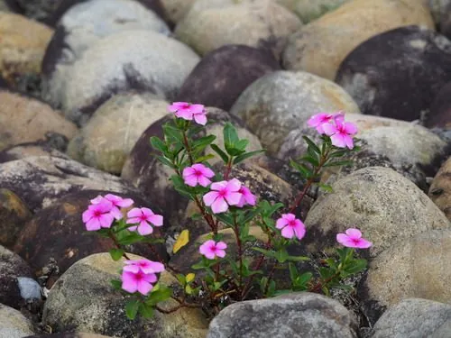

花卉与草本 · 植物界
长春花 Catharanthus roseus

夹竹桃科常绿亚灌木，花期长、几乎全年开花，是重要的抗癌药用植物，原产马达加斯加，又称日日春。
- 分类
- 门被子植物门纲木兰纲目龙胆目科夹竹桃科属长春花属
- 栖息环境
- 马达加斯加的海岸灌丛与林缘，喜温暖、阳光充足
- 地理分布
- 原产马达加斯加，现全球热带、亚热带地区归化或栽培，中国南方常见
- 保护级别
- 暂无评估
物种志
长春花为夹竹桃科长春花属常绿亚灌木，常作草本栽培，株高 30–60 厘米，茎直立，多分枝，全株光滑。叶片对生，倒卵形至长圆形，表面深绿有光泽，中脉明显。花单生或成聚伞花序，花冠高脚碟状，5 裂，有粉、白、紫红等色，花期 5–10 月，温暖地区几乎全年开花；果实为蓇葖果。
长春花原产马达加斯加，喜温暖、阳光充足和湿润的环境，不耐寒，冬季需保持在 10℃ 以上，对土壤要求不严。它在热带地区逸生后容易归化，成为常见的路边野花。长春花是重要的药用植物，全株含长春碱和长春新碱等生物碱，可用于提取抗癌药物；但全株有毒，误食会引起白细胞减少等中毒症状，只可观赏，切勿采食或自行入药。
形态与习性
- 株高30–60 厘米，茎多分枝
- 花期5–10 月，温暖地区几乎全年开花
- 果期花后结蓇葖果
- 光照喜充足阳光，也耐半阴
- 水分喜湿润，忌积水
- 土壤疏松、排水良好的壤土
- 繁殖以播种和扦插为主
- 主要用途观赏、提取抗癌生物碱
趣味知识
- 长春花全株含长春碱、长春新碱等生物碱，是提取抗癌药物的重要原料。
- 它全株有毒，误食会影响造血系统，只能观赏，不可采食或自行入药。
- 长春花花期极长，温暖地区几乎全年开花，故有“日日春”的别名。
- 在热带、亚热带地区，长春花逸生后常成为路边常见的归化植物。